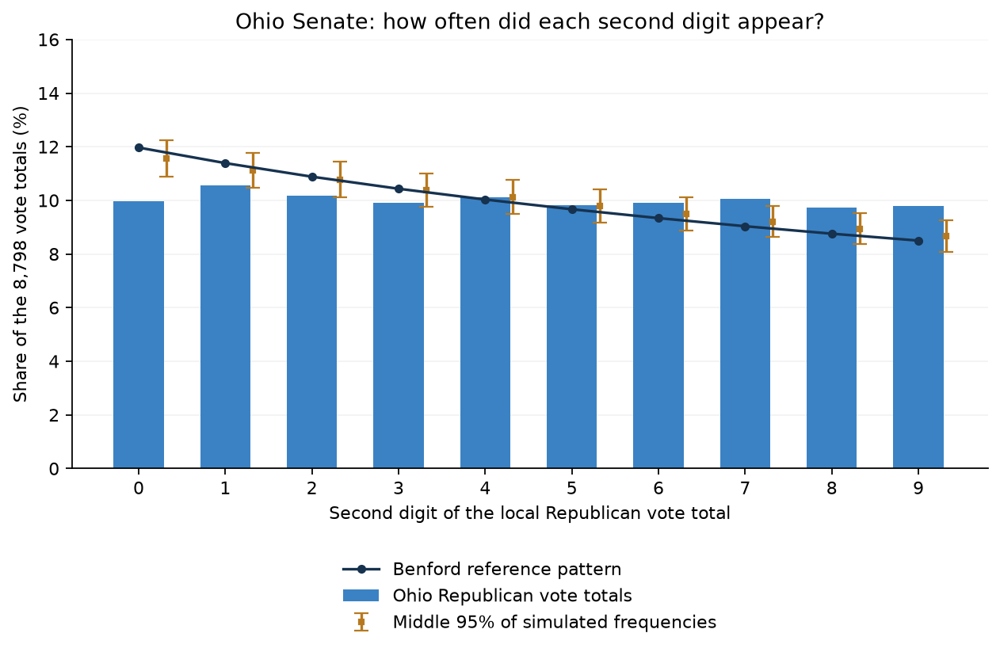
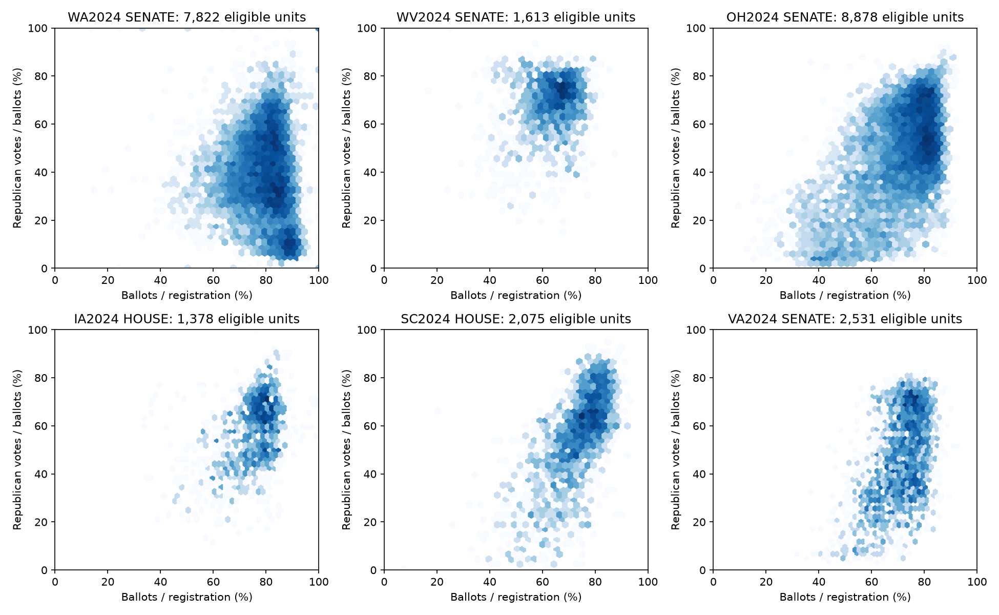
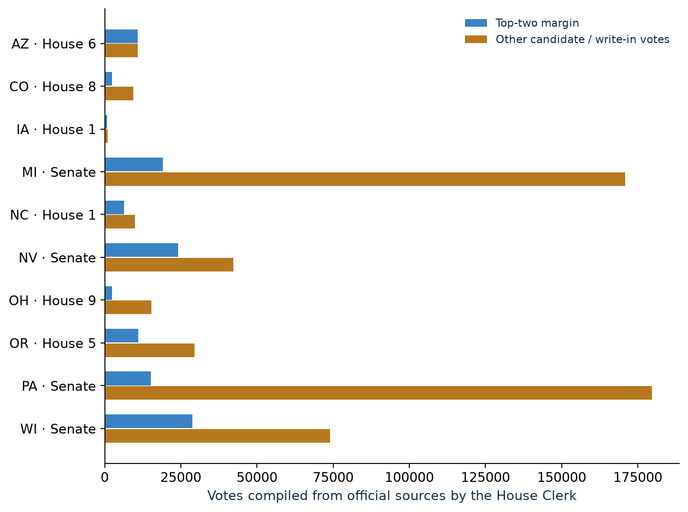

Ohio has a number pattern worth checking
The Ohio Senate vote-count digits stood out against two expected patterns. That alone cannot tell me why the pattern appeared or whether anything went wrong. Read the Ohio finding ↓
I checked vote totals from 47,236 local reporting areas. In the Ohio Senate race, the digits in Republican vote counts looked unusual against two expected patterns. The cause is unresolved: these checks cannot tell me whether it reflects ordinary differences between reporting areas, a data problem or manipulation. See the Ohio finding ↓
Could other candidates’ voters change the winner?
In ten races, votes for candidates outside the top two outnumbered the winner’s lead. If enough of those voters had chosen the runner-up instead, the winner could have changed. I do not know whether they would have.
The Ohio Senate vote-count digits stood out against two expected patterns. That alone cannot tell me why the pattern appeared or whether anything went wrong. Read the Ohio finding ↓
Minnesota checked paper ballots by hand in 219 precincts. All 657 race checks passed the state’s rules. Some small differences remained. This finding applies only to the precincts checked.
In ten close races, there were enough votes for other candidates to change the winner on paper. But counting those votes does not tell me who those voters would choose in a two-person race.
The second digit in Republican vote counts appeared in an unusual pattern. The second digit of 1,234 is 2. Under the Benford model, second digits should follow Benford’s law for the second-digit distribution. I compared the frequencies of digits 0–9 across 8,798 local Republican vote totals with that distribution and with a model fitted to the sizes of Ohio’s vote totals.
Ohio stood out in both comparisons, even after allowing for the many tests in this study. It was the only 2024 case to do so. Seven cases from older elections also stood out in both comparisons.
Blue bars show Ohio’s results. Each bar shows how often a second digit appeared among the 8,798 Republican vote totals. The dark line shows the Benford reference pattern. The amber markers show the range usually produced by a model fitted to the sizes of Ohio’s vote totals.

What stands out: about 10% of Ohio’s totals have 0 as the second digit, compared with about 12% in the Benford pattern. Digits 7, 8 and 9 appear more often than that pattern predicts. Overall, Ohio’s bars are flatter than the reference line.
A gap between a bar and a reference shows a difference from that model. It does not show how many votes were wrong. The overall finding considers the pattern across all ten digits.
It gives me a reason to look more closely at the records. It does not tell me that votes were added, removed or switched. The two comparisons use the same vote counts, so they are not two independent pieces of evidence.
The models do not fully account for differences in reporting-area size or voter makeup. Those differences could help explain the pattern. This check cannot tell me how many votes might be affected or whether the winner would change.
A useful next step would be to check the original Ohio records, see which areas contribute most to the pattern, and repeat the comparison using areas of similar size and voting habits. Paper-ballot checks would provide evidence that digit patterns alone cannot.
This is a Benford second-digit test of 8,798 Republican Senate vote counts of at least 10. The theoretical comparison gives p = 9.44 × 10−14 and adjusted q = 2.18 × 10−11. The fitted-lognormal comparison, refined with 20,000 simulations, gives p = 1/20,001 (about 0.00005) and adjusted q = 0.00496. Both pass the q < 0.05 threshold after separate adjustments across the full family of 694 digit tests. These values are not probabilities that fraud occurred.
The Ohio data is a pinned mirror copy, not a fresh download from the state. It omits 640 Senate write-in votes compared with the House Clerk’s totals; the named Republican candidate’s counts remain available for this test. The models do not capture all differences between reporting areas.
All digit-test results (CSV) · Full statistical report · Source checks and discrepancies
The clearest lead was in Ohio. The other checks did not establish fraud. Normal differences between communities can also produce unusual-looking results, and these tests can miss problems.
110 current contest samples · 65 historical samples · 694 digit tests.
Ten digit tests flag against theoretical distributions and eight against a fitted lognormal model; eight flag under both, after separate Benjamini–Hochberg adjustments for multiple testing. Only one of those eight is from 2024. Neither reference model captures every difference in precinct size or voter composition.

Those votes alone do not tell me whether anything went wrong.
The own-sample registration-weighted 99.5th-percentile tails contain 0–1.489% of leading-bloc votes in current samples. No honest-core model is established, so there is no defensible stuffed-vote total or corrected outcome. Historical samples are comparisons, not matched-precinct controls.
The pattern changes from state to state. Differences between communities can explain it.
Weighted and county-demeaned correlations are exported for every tested contest. Geographic gradients and the sign changing between states make a national fraud interpretation unjustified. Support uses candidate votes / all ballots, including contest nonvoting.
They do, but different voting patterns are not evidence of fraud.
Two Gaussian components are fitted within each eligible contest. This is a descriptive surrogate for population heterogeneity, not the paper’s mechanistic fraud model; component weights are not fraud rates.
No warning remained after allowing for the number of tests I ran.
525 metric screens, each with 1,000 binomial simulations; integer and multiple-of-five excesses form a jointly adjusted family of 1050 approximate one-sided normal-tail tests. 0 metric screens flag in that approximation. Sparse discrete tails and endogenous binomial probabilities require calibration; the table is a follow-up queue.
Ohio’s Republican Senate counts stood out against two expected patterns. This needs a closer look.
694 tests; counts must be ≥10 / ≥100, with ≥100 eligible counts per test. 10 theoretical and 8 lognormal-null flags after separate BH adjustments; 8 overlap. The initial fitted-lognormal null uses 400 simulations. All theoretical BH flags and all minimum-p Monte Carlo hits (12 tests) are rechecked with 20,000 simulations (minimum p=1/20,001); unselected tests receive p=1 before a fresh full-family BH adjustment. This avoids interpreting a coarse simulation floor as absence of a signal. Neither null models all election heterogeneity.
The checks give me places to review, not a list of fraudulent results.
2,753 county median/MAD flags; 1,451 Isolation Forest flags over current and historical unit–contest observations. County peers are not physical neighbors or socioeconomic matches. Isolation Forest uses 1% imposed contamination and no labeled fraud training set.
Yes. Small reporting areas can match by chance.
1,673 repeated-vector rows (registration, ballots, DEM, REP, other). Repetition is not itself improbable without a conditional null; small precincts can match by chance. Splits and overlapping Washington sources are not counted as independent precincts.
Yes. A made-up test case went undetected, so a clean result is no guarantee.
Minnesota Senate: a fixed original cutoff of 92.56% gives 9,401 Republican tail votes before injection and 156,258 after 45,950 synthetic Republican votes are added. Rounded-turnout injection into 194 units changes z from -1.49 to 0.31. The rounded scenario does not flag, so detection power is limited. The tail also counts pre-existing votes moved above the cutoff; it does not recover the injection size. These scenarios do not calibrate a fraud rate.
Digit table includes every flag under either null, with both comparisons. Integer q-values use a normal approximation and joint integer/multiple-of-five adjustment, not exact Monte Carlo tail probabilities.
| Source / office | District | Bloc | Counts | Theoretical p | Adjusted q | Fitted-model p | Fitted adjusted q |
|---|---|---|---|---|---|---|---|
| CA2020 HOUSE | 027 | DEM | 227 | 0.000338 | 0.0261 | 0.0005 | 0.0434 |
| CA2020 HOUSE | 028 | DEM | 215 | 2.19e-10 | 2.53e-08 | 5e-05 | 0.00496 |
| CA2020 HOUSE | 030 | DEM | 213 | 6.44e-18 | 4.47e-15 | 5e-05 | 0.00496 |
| CA2020 HOUSE | 032 | DEM | 235 | 7.01e-12 | 9.73e-10 | 5e-05 | 0.00496 |
| CA2020 HOUSE | 033 | DEM | 212 | 1.71e-08 | 1.69e-06 | 5e-05 | 0.00496 |
| CA2020 HOUSE | 043 | DEM | 224 | 0.000677 | 0.047 | 0.00075 | 0.0578 |
| CA2020 PRESIDENT | STATEWIDE | DEM | 15524 | 1.01e-14 | 3.49e-12 | 5e-05 | 0.00496 |
| OH2024 SENATE | STATEWIDE | REP | 8798 | 9.44e-14 | 2.18e-11 | 5e-05 | 0.00496 |
| WA2020 PRESIDENT | STATEWIDE | DEM | 7117 | 5.96e-12 | 9.73e-10 | 5e-05 | 0.00496 |
| WA2024 SENATE | STATEWIDE | DEM | 7657 | 6.52e-06 | 0.000565 | 0.0013 | 0.0902 |
| Source / office | District | Metric | Units | Integer hits | z | Adjusted q (approx.) |
|---|---|---|---|---|---|---|
| MN2016 HOUSE | 006 | turnout | 277 | 12 | 3.36244 | 0.25036 |
| CA2024 HOUSE | 29 | share:votes:REP | 135 | 6 | 2.69765 | 0.91653 |
| MN2016 HOUSE | 007 | share:votes:REP | 1316 | 102 | 2.46101 | 0.95306 |
| CA2024 HOUSE | 32 | share:votes:DEM | 173 | 8 | 2.41574 | 0.95306 |
| CA2024 HOUSE | 44 | share:votes:DEM | 167 | 7 | 2.38953 | 0.95306 |
| VA2024 HOUSE | 010 | share:votes:REP | 196 | 5 | 2.07313 | 1.00000 |
| CA2024 HOUSE | 17 | share:votes:DEM | 217 | 8 | 1.99799 | 1.00000 |
| VA2024 HOUSE | 008 | turnout | 170 | 4 | 1.99272 | 1.00000 |
| CA2024 HOUSE | 48 | share:votes:DEM | 429 | 21 | 1.83787 | 1.00000 |
| CA2020 HOUSE | 043 | turnout | 229 | 10 | 1.82714 | 1.00000 |
| Source / office | District | units | republican_weighted_r | county_demeaned_r | turnout_pct | tail_share_pct |
|---|---|---|---|---|---|---|
| CA2020 PRESIDENT | STATEWIDE | 17241 | 0.2730 | 0.2728 | 81.047 | 0.6326 |
| CA2024 SENATE | STATEWIDE | 17867 | 0.1176 | 0.3029 | 71.390 | 0.8391 |
| MN2020 SENATE | STATEWIDE | 4075 | 0.3808 | 0.4847 | 85.576 | 0.3653 |
| MN2024 SENATE | STATEWIDE | 4075 | 0.3154 | 0.4006 | 82.162 | 0.5182 |
| OH2024 SENATE | STATEWIDE | 8878 | 0.5000 | 0.5925 | 71.709 | 0.6024 |
| VA2024 SENATE | STATEWIDE | 2531 | 0.4680 | 0.5648 | 70.521 | 0.4785 |
| WA2020 PRESIDENT | STATEWIDE | 7278 | -0.1233 | 0.0288 | 84.132 | 0.8748 |
| WA2024 SENATE | STATEWIDE | 7822 | -0.1044 | 0.0102 | 78.953 | 0.6375 |
| WV2024 SENATE | STATEWIDE | 1613 | 0.2004 | 0.2494 | 63.893 | 0.4403 |
Historical precincts are not a matched panel: redistricting, reporting boundaries, pandemic voting and registration definitions differ. Minnesota 2016/2020, California 2020 and Washington 2020 cannot by themselves define a nationwide honest-election null.
Download: metrics · digit tests · integer screens · outlier rankings · sensitivity checks.
Every check passed the state’s rules. This gives me evidence from actual paper ballots for the places reviewed, but it cannot tell me about places that were not checked.
The official 438-page report covers 657 precinct–contest tables across 219 precinct identities. Of these, 115 tables have a nonzero raw total difference and 24 have a nonzero adjusted difference. Summed candidate/category differences are 365 raw and 28 adjusted; they are not counts of unique disputed ballots. ACCEPTABLE reflects official tolerance thresholds, not exact equality.
All table statuses and totals were parsed with arithmetic checks. Luna separately verified four tables on three page images; this was not a visual audit of all 438 pages. The hand review provides physical evidence for the reviewed sample, with no claim about unreviewed precincts. Review summary (JSON) · Every review table (CSV).
I used 47,236 local reporting areas, including precincts, groups of precincts and central vote-counting pools. This is only part of the country. Not every area had enough usable data for every test.
The study focuses on Senate and House races. Older elections help put the findings in context, but changes in boundaries and voting rules make direct comparisons difficult.
| Source / office | Rows | Eligible | Unknown | Zero denominator | Above registration | Votes > ballots | Source limits |
|---|---|---|---|---|---|---|---|
| CA2020 HOUSE | 21346 | 17241 | 0 | 3928 | 357 | 0 | 0 |
| CA2020 PRESIDENT | 21346 | 17241 | 0 | 3928 | 357 | 0 | 0 |
| CA2024 HOUSE | 25245 | 17870 | 1974 | 5431 | 409 | 0 | 78 |
| CA2024 SENATE | 25245 | 17867 | 1974 | 5431 | 409 | 3 | 78 |
| IA2024 HOUSE | 1653 | 1378 | 2 | 271 | 273 | 0 | 0 |
| ID2024 HOUSE | 986 | 974 | 1 | 11 | 10 | 1 | 0 |
| MD2024 SENATE | 2227 | 0 | 514 | 4 | 16 | 335 | 2227 |
| MN2016 HOUSE | 4120 | 4083 | 0 | 31 | 6 | 0 | 0 |
| MN2020 HOUSE | 4110 | 4075 | 0 | 33 | 2 | 0 | 0 |
| MN2020 SENATE | 4110 | 4075 | 0 | 33 | 2 | 0 | 0 |
| MN2024 HOUSE | 4103 | 4075 | 0 | 28 | 0 | 0 | 0 |
| MN2024 SENATE | 4103 | 4075 | 0 | 28 | 0 | 0 | 0 |
| MS-Union2024 HOUSE | 20 | 20 | 0 | 0 | 0 | 0 | 0 |
| MS-Union2024 SENATE | 20 | 20 | 0 | 0 | 0 | 0 | 0 |
| OH2024 HOUSE | 8915 | 8841 | 0 | 0 | 0 | 0 | 74 |
| OH2024 SENATE | 8878 | 8878 | 0 | 0 | 0 | 0 | 0 |
| SC2024 HOUSE | 2674 | 2075 | 366 | 206 | 154 | 0 | 90 |
| VA2024 HOUSE | 2695 | 2523 | 156 | 2 | 0 | 2 | 38 |
| VA2024 SENATE | 2675 | 2531 | 144 | 2 | 0 | 2 | 0 |
| VT2024 HOUSE | 247 | 0 | 0 | 0 | 0 | 0 | 247 |
| WA2020 PRESIDENT | 7436 | 7278 | 85 | 68 | 6 | 1 | 0 |
| WA2024 HOUSE | 7824 | 7821 | 0 | 2 | 3 | 0 | 0 |
| WA2024 SENATE | 8136 | 7822 | 202 | 111 | 3 | 0 | 0 |
| WV2024 HOUSE | 1651 | 1613 | 2 | 35 | 35 | 0 | 0 |
| WV2024 SENATE | 1651 | 1613 | 2 | 35 | 35 | 0 | 0 |
Source limits retained: Washington statewide data replaces King County, with registration differences of 13 versus the recorded statewide table and 4,521 versus the active-voter reconciliation workbook; every county ballot total and all 33 congressional candidate columns reconcile. Iowa, West Virginia and Ohio are pinned mirror copies, not freshly retrieved official files. Ohio write-ins are missing (640 Senate, 4 House district 2 and 29 House district 11 votes versus the Clerk); named-candidate digits remain observable. West Virginia’s other-candidate pool is short by 15 Senate and 174 House district 1 votes. None is filled with inferred precinct counts.
Geography and exclusions: split House precinct rows are excluded when full-precinct turnout cannot be assigned to a fragment. California suppression, above-registration counts, zero denominators and missing joins remain excluded. Virginia and South Carolina use name joins with numeric padding removed, collision checks and outer-join audits; unmatched rows stay unknown. South Carolina precinct ballots and registration sum exactly to its county/state Election History totals; VREMS voter-history denominators are not substituted. Vermont’s 247 town rows contain partial district results in multi-district towns and incomplete statewide candidate totals, so all are excluded from the combined diagnostics. Maryland administrative participation is still incompatible. Wyoming and North Dakota lack registration; Pennsylvania lacks ballots; North Carolina supplies registration only. Provisional OCR rows and four Kentucky PDFs remain outside the sample: transcript arithmetic alone does not validate the needed joins, and Kentucky’s published turnout has an unofficial/roll-timing caveat.
| Source / office | District | bloc | observed | clerk | difference |
|---|---|---|---|---|---|
| OH2024 HOUSE | 002 | votes:OTHER | 0.0 | 4.0 | -4.0 |
| OH2024 HOUSE | 011 | votes:OTHER | 6107.0 | 6136.0 | -29.0 |
| OH2024 SENATE | STATEWIDE | votes:OTHER | 195648.0 | 196288.0 | -640.0 |
| VT2024 HOUSE | 001 | votes:DEM | 172146.0 | 218398.0 | -46252.0 |
| VT2024 HOUSE | 001 | votes:REP | 89076.0 | 104451.0 | -15375.0 |
| VT2024 HOUSE | 001 | votes:OTHER | 23356.0 | 27767.0 | -4411.0 |
| WV2024 HOUSE | 001 | votes:OTHER | 25616.0 | 25790.0 | -174.0 |
| WV2024 SENATE | STATEWIDE | votes:OTHER | 26075.0 | 26090.0 | -15.0 |
Absent Clerk minor-party categories are unknown in the reconciliation table rather than treated as a source mismatch. Complete source rows, unmatched keys and every exclusion are retained in the join audit.
In ten races, the votes for candidates outside the top two were larger than the gap between first and second place.
For example, Iowa’s 1st House district was decided by 799 votes. There were 967 write-in votes. If 800 of those voters had backed the runner-up instead, with the rest sitting out, the result would have flipped. I do not know if they would have made that choice.

| Contest | Margin | Other votes | Needed if rest abstain | Needed if rest back leader |
|---|---|---|---|---|
| AZ · House 6 | 10,822 | 10,850 | 10,823 | 10,837 |
| CO · House 8 | 2,449 | 9,425 | 2,450 | 5,938 |
| IA · House 1 | 799 | 967 | 800 | 884 |
| MI · Senate | 19,006 | 170,821 | 19,007 | 94,914 |
| NC · House 1 | 6,307 | 9,949 | 6,308 | 8,129 |
| NV · Senate | 24,059 | 42,197 | 24,060 | 33,129 |
| OH · House 9 | 2,382 | 15,381 | 2,383 | 8,882 |
| OR · House 5 | 10,945 | 29,508 | 10,946 | 20,227 |
| PA · Senate | 15,115 | 179,662 | 15,116 | 97,389 |
| WI · Senate | 28,781 | 74,014 | 28,782 | 51,398 |
For margin M and other-vote pool O, O > M shows arithmetic capacity. If the rest abstain, M+1 voters transferring to the runner-up reverses the result. If every remaining other voter backs the leader, the threshold is floor((O+M)/2)+1. Neither scenario is an estimate of what those voters would do. Iowa House 1’s 967 other votes are pooled write-ins, not one candidate or an observed voting bloc.
I cannot say a candidate “spoiled” a race. The totals show what is possible on paper. They do not tell me anyone’s second choice.
I listed all 435 House and 33 regular Senate races and screened 448 contests in which the most votes win and multiple candidate records were available. Majority-rule and ranked-choice races, non-candidate ballots and Nevada’s “None of These Candidates” were excluded.
Every root paradox criterion and both thresholds · Candidate totals with PDF pages · All race screens · MEDSL reconciliation · Official Clerk PDF.
These checks cannot tell me how many votes, if any, were fraudulent. They also cannot prove that every place without a warning sign was counted correctly.
Some records were missing or could not be compared reliably. I did not examine ballot handling or how results changed on election night. Minnesota’s hand check is the only paper-ballot review included here.
These gaps prevent estimating a reliable fraud rate, demonstrating a preference paradox, or declaring the unflagged units verified clean.
This page uses the analysis dated 18 October 2026.
Full statistical report · Summary data · Source reconciliation · Download provenance.
The source compilation is not a new certification of election results. Raw archives remain upstream; this page includes the analysis tables and provenance needed to trace the snapshot.